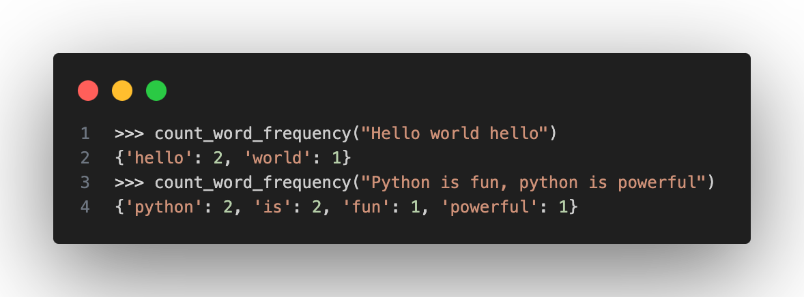
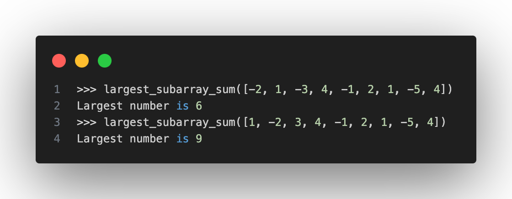
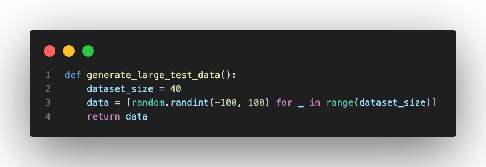

Syllabus
Unit 1 and 2
Learning Intention and Success Criteria
Learning Intention - Students will:
- Revise content and build team bonds.
Success Criteria - Students can:
- Identify their classmates.
- Recall and implement Unit 1 content and skills.
Content
Ice Breaker
Paper Airplane Flight Challenge (sciencefriday.com)
Design and build a paper aeroplane. Adjust the design to maximise its flight distance. Record your flight distances.
Move to groups with your mentor and return in 20 minutes.
Materials
- recycled paper
- tape
- ruler
- paper plane data collection sheet
Build a Design
Fold a "basic dart" paper airplane using recycled materials from around your home.
Test Variations
Like all planes, paper aeroplanes experience four forces: gravity, thrust, lift, and drag. Simple changes, like wing size, body weight, and throw power, can significantly alter the forces your plane experiences.
Get creative and adjust various aspects of your plane. Here are a few ideas to get you started:
#1: Increase Lift
As the plane travels, air moves quickly over the top of the wings. This creates lower pressure over the wings, allowing the high pressure under the wings to lift the plane. Try making wider wings or wings that curve up or down at the ends.
#2: Limit Drag
Air molecules push against the front of the plane as it travels, slowing it down. Ensure your plane's nose is pointed, and the body is lightweight.
#3: Change The Thrust
When you throw your plane, you provide thrust, which pushes the plane forward through the air. This forward movement causes air molecules to travel over the top and bottom of the wings. Does the strength or angle at which you throw your plan impact it?
#4: Try A New Material
The weight of the plane can pull it downward. How does a heavier or lighter paper change your plane?
Computational Thinking Challenges
Please complete the Bebras quiz linked here
Software Competition
Python Challenge 1
Write a Python function called count_word_frequency that takes a string as input and returns the frequency of each word in the string. Words are case-insensitive and should be considered alphanumeric.
For example:
count_word_frequency("Hello world hello")should return{'hello': 2, 'world': 1}.count_word_frequency("Python is fun, python is powerful")should return{'python': 2, 'is': 2, 'fun': 1, 'powerful': 1}.

Test Sample:
In the realm of software engineering, lines of code serve as the building code of innovation, weaving intricate pathways through the digital landscape. With each code written, developers breathe life into code, crafting solutions that navigate the complexities of modern technology. Bugs, like hidden adversaries, challenge the perseverance of programmers, who tirelessly code and optimise their code. Collaboration emerges as the code of progress, as teams unite to forge resilient systems that withstand the tests of time. Through iterative code of refinement, ideas blossom into fully realised software solutions. In this dynamic ecosystem, creativity and code harmonise, guiding the trajectory of technological advancement and shaping the future of digital realms.
Python Challenge 2
Write a Python function called largest_subarray_sum that takes a list of integers as input and returns the largest sum of contiguous subarrays within the list.
For example:
largest_subarray_sum([-2, 1, -3, 4, -1, 2, 1, -5, 4])should return6, as the largest sum is[4, -1, 2, 1].largest_subarray_sum([1, -2, 3, 4, -1, 2, 1, -5, 4])should return9, as the largest sum is[3, 4, -1, 2, 1].

Test Sample:

Structure Chart
Scenario:
You've been tasked with architecting the software backbone for a cutting-edge house security system. The system aims to ensure the safety of residents by monitoring various sensors deployed throughout the house and responding promptly to security events. It should detect intrusions, fire alarms, gas leaks, and other environmental hazards, provide real-time alerts, and enable quick emergency responses.
Question:
Develop a hierarchical structure chart outlining the main modules and their interactions for this house security system.
Structure Chart:
-
Sensor Monitoring Module:
- Responsible for continuously monitoring sensors installed throughout the house, including motion sensors, door/window sensors, smoke detectors, carbon monoxide detectors, and temperature sensors.
-
Event Detection Module:
- Analyses data received from the Sensor Monitoring Module to detect security events such as intrusions, fire alarms, gas leaks, and other environmental hazards.
- Passes detected events to the Alarm Management Module for further processing.
-
Alarm Management Module:
- Receives security events from the Event Detection Module and determines the appropriate response based on predefined rules and user configurations.
- Manages the activation and deactivation of alarms, including sirens, lights, and notifications to the user.
- Passes control signals to the Emergency Response Module for immediate action if necessary.
-
User Interface Module:
- Provides a user-friendly interface for homeowners to interact with the security system.
- Allows users to view sensor statuses, configure system settings, and receive real-time alerts.
- Passes user commands and configurations to relevant modules for execution.
-
System Configuration Module:
- Enables users to customise system settings, including sensor sensitivity, alarm thresholds, and emergency contact information.
- Stores and manages user preferences and configurations for the security system.
-
Emergency Response Module:
- Activates emergency protocols and notifies authorities (police, fire department, medical services) in case of verified security events requiring immediate intervention.
- Receives signals from the Alarm Management Module to initiate emergency response procedures.
Interactions:
- The Sensor Monitoring Module continuously collects data from sensors deployed throughout the house and passes it to the Event Detection Module.
- The Event Detection Module analyses sensor data to detect security events and forwards detected events to the Alarm Management Module.
- The Alarm Management Module determines the appropriate response to security events based on predefined rules and user configurations, activating alarms and notifying users as necessary.
- The User Interface Module provides a platform for users to interact with the system, allowing them to view sensor statuses, configure settings, and receive alerts.
- The System Configuration Module enables users to customise system settings and preferences, storing and managing user configurations.
- The Emergency Response Module initiates emergency protocols and notifies authorities if verified security events require immediate intervention.
This structure chart outlines the main modules and their interactions within the house security system, facilitating efficient data flow and decision-making processes to ensure the safety and security of residents.
Pseudocode
Instantiate an array of 20 entries and prompt the user to enter numbers in it. Once the array is filled, you must run a subroutine that checks for duplicate numbers and removes them from the array. You must then prompt the user to enter new numbers until there are no duplicates in the array. Use syntactically and logically correct Pseudocode to write this algorithm.
Data Flow Diagram
Scenario:
You've been tasked with designing a university's Student Enrollment System. The system must facilitate student enrollment, manage course registrations, track academic records, and provide faculty and administrative staff with relevant information.
Question:
Develop a Data Flow Diagram (DFD) for the Student Enrollment System, illustrating how data flows between students, faculty, and administrative staff for course registration, grading, and academic record maintenance.
Details:
-
Student Registration:
- Students can submit course registration requests through the system, indicating their desired courses for the upcoming semester.
- The system validates the registration requests and updates the student's enrollment status accordingly.
-
Course Management:
- Faculty members can access the system to view available courses, update course details, and set enrollment capacities.
- The system allows faculty to assign grades to students enrolled in their courses at the end of the semester.
-
Academic Records:
- Administrative staff can view and update academic records, including student transcripts, GPA calculations, and graduation eligibility.
- The system tracks student progress, including completed courses, grades received, and overall academic standing.
-
Communication:
- The system facilitates communication between students, faculty, and administrative staff regarding enrollment issues, course availability, and academic advising.
- Students receive notifications regarding enrollment status, course changes, and academic deadlines.
Interactions:
- Students submit course registration requests through the system, which are processed and updated in the student database.
- Faculty members access the system to view course offerings, update course details, and input grades for enrolled students.
- Administrative staff use the system to manage academic records, track student progress, and communicate with students and faculty.
- Data flows between students, faculty, and administrative staff to facilitate course registration, grading, and academic record maintenance processes.
Flowchart
You must create a guessing game that takes a user-input number and checks it against a number you have chosen. In this interactive guessing game, you pick a random number between 1 and 100 as the target. The user is prompted to guess the correct number; they have five guesses to get the right number.
If they do guess the correct number, you must prompt them with "YOU WIN"; otherwise, they should continue guessing until they have reached their guess limit. If they exceed their guess limit, prompt them with "YOU LOSE".
Extension Programming
Problem Statement
Detective Alex has discovered a series of numbers at a crime scene. Each number in the sequence has been encrypted using a special cipher. Your task is to write a program that can decrypt the sequence and reveal the hidden message.
Input Format
- The first line contains an integer
n(1 ≤ n ≤ 100), representing the number of encrypted values. - The second line contains
nspace-separated integers, each representing an encrypted valuex(0 ≤ x ≤ 10^6). - The third line contains a single integer
k(1 ≤ k ≤ 100), representing the cipher key.
Output Format
- Output a single line containing
nspace-separated integers, representing the decrypted values.
Cipher Rules
To decrypt each number x in the sequence:
- Reverse the digits of
x(e.g., 123 becomes 321) - Multiply by the cipher key
k - Calculate the sum of its digits
- Take the result modulo 26
- Convert to the corresponding letter (0→A, 1→B, ..., 25→Z)
Example
Input:
5
123 45 67 89 1000
3Output:
S J P K FExplanation:
For x = 123:
- Reverse: 321
- Multiply by k=3: 321 × 3 = 963
- Sum of digits: 9 + 6 + 3 = 18
- 18 % 26 = 18
- 18 corresponds to 'S'
For x = 45:
- Reverse: 54
- Multiply by k=3: 54 × 3 = 162
- Sum of digits: 1 + 6 + 2 = 9
- 9 % 26 = 9
- 9 corresponds to 'J'
And so on...
Constraints
- Your solution should run within a time limit of 1 second.
- The program should use only standard Python libraries (no external libraries).
Final Coding problem
Problem
MATRIX TREASURE HUNTER
Background:
-----------
You are a mathematician working for an archaeology department that has discovered an ancient
mathematical artifact: a square stone tablet with numbers arranged in a spiral pattern.
According to ancient texts, the tablet contains clues to hidden treasures along certain pathways.
For example, a 5x5 tablet looks like this:
21 22 23 24 25
20 7 8 9 10
19 6 1 2 11
18 5 4 3 12
17 16 15 14 13
Your Mission:
------------
The archaeology team needs you to analyze the tablet and identify potential treasure pathways.
Based on historical records, treasures are likely to be found along paths where the sum of numbers
divided by the path length results in the highest average.
Specifically, you need to:
1. Generate a number spiral of size n×n (where n is an odd integer)
2. For each of the eight key lines passing through the center (horizontal, vertical,
both diagonals, and the four half-lines from center), calculate:
- The sum of all numbers on that line
- The average value along that line
3. Return the line with the highest average value, which likely points to the treasure
Requirements:
------------
1. Create a function to generate the spiral matrix
2. Calculate the average value for each of the 8 lines through the center
3. Return the line with the highest average, its direction, and the average value
Input:
-----
- size: An odd integer n representing the size of the spiral matrix (n×n)
Output:
------
- A dictionary with three keys:
- 'direction': The direction of the line ("horizontal", "vertical", "diagonal_main",
"diagonal_secondary", "right", "left", "up", or "down")
- 'numbers': The list of numbers on that line
- 'average': The average value of that line (rounded to 2 decimal places)
Example:
-------
For a 5×5 spiral:
find_treasure_path(5) might return:
{
'direction': 'right',
'numbers': [1, 2, 11, 10, 25],
'average': 9.8
}
This means the path going right from the center (1, 2, 11, 10, 25) has an average
value of 9.8, which is the highest among all eight paths.
Note:
-----
- The spiral starts with 1 at the center and proceeds outward in a clockwise direction
- The lines to check are: horizontal (left-to-right), vertical (top-to-bottom), main diagonal
(top-left to bottom-right), secondary diagonal (top-right to bottom-left), as well as the
half-lines right, left, up, and down from center
- This problem involves matrix generation, list manipulation, and simple statistics
def generate_spiral(size):
"""
Generates a spiral matrix of given size.
Args:
size (int): The size of the matrix (must be odd)
Returns:
list: A 2D list representing the spiral matrix
"""
# Your spiral generation code here
pass
def find_treasure_path(size):
"""
Finds the line through the center of the spiral with the highest average value.
Args:
size (int): The size of the spiral matrix (must be odd)
Returns:
dict: Dictionary with keys 'direction', 'numbers', and 'average'
"""
# Your solution code here
pass
# Test your solution
if __name__ == "__main__":
# Test with a 5x5 spiral
result = find_treasure_path(5)
print(f"Direction: {result['direction']}")
print(f"Numbers: {result['numbers']}")
print(f"Average value: {result['average']}")
# Test with a 7x7 spiral
result = find_treasure_path(7)
print(f"\nDirection: {result['direction']}")
print(f"Numbers: {result['numbers']}")
print(f"Average value: {result['average']}")